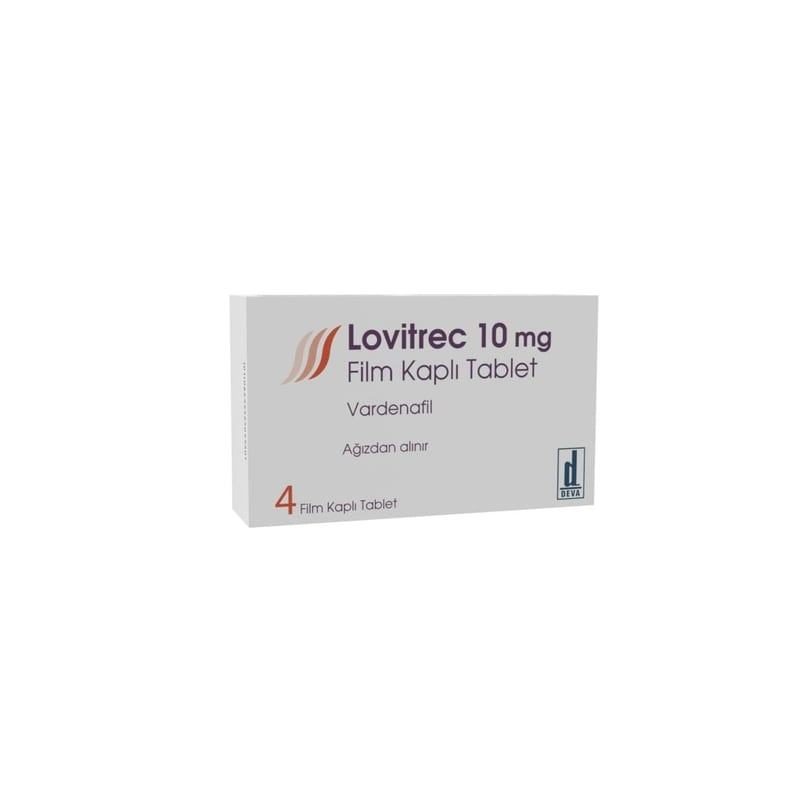

Lovitrec 10 mg Film Kaplı Tablet, 4 Adet

Ne için kullanılır
KT · Bölüm 1 LOVİTREC, film kaplı tablet şeklinde kullanıma sunulmuştur. LOVİTREC’in etkin maddesi vardenafil, fosfodiesteraz tip 5 (PDE5) inhibitörleri adı verilen ilaç grubuna dahildir. PDE5’in baskılanması, kaslarda gevşemeye ve penise kan akımının artmasına neden olur. Sonuçta penis sertleşmesi sağlanır. LOVİTREC, turuncu renkte, bombeli, yuvarlak, film kaplı bir tablettir. Her kutuda 4 tablet bulunur. LOVİTREC, erkeklerde sertleşme sorunu (erektil disfonksiyon) tedavisinde kullanılır. Sertleşme sorunu, bir erkekte cinsel etkinlik için gereken penis sertleşmesinin sağlanamaması veya sertliğin korunamamasıdır.